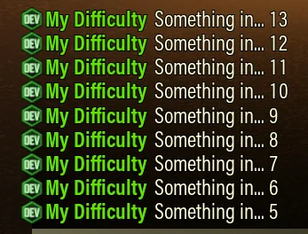

动态参数与逻辑控制 · Mutators
提示：所有字段除了直接填写固定值，也都可以填一个对应类型的 Var（如 {"Var": "变量名"}）。
下面是 CD2 中按字母先后顺序排序的 Mutators 列表。
英文原文
Here follows an alphabetized list of mutators for CD2.
累加 · Accumulate
从 Initial 指定的值开始累加 Value。如果 Value 是另一个 Mutator，累计值会随它的结果变化。可以用 Min 和 Max 限制最终结果的范围。
英文原文
Accumulate can track changes in other mutators by adding to a starting Initial number. In addition, it also supports clamping the accumulated value with Min and Max. If used with a constant value, it can be used to make a simple counter.
| 字段 | 填写 | 作用 |
|---|---|---|
Initial | 数字 | 设置初始值 |
Value | 数字或 Mutator | 设置每次累加的值 |
Min 可选 | 数字 | 限制最小值 |
Max 可选 | 数字 | 限制最大值 |
返回： float（浮点数）
示例：下面这段代码的数值会从 0 开始计数，在大约 10 秒后达到上限 10。
英文原文
Example: the value of the following snippet starts at 0 and would cap at 10 after roughly 10 seconds.
注意：Value 字段指定的数字为动态的时候，0.5s 计算一次
{
"Mutate": "Accumulate",
"Initial": 0,
"Value": 1,
"Min": 0,
"Max": 10
}加、减、乘、除、幂、取模、四舍五入、向上取整、向下取整 · Add, Subtract, Multiply, Divide, Pow, Modulo, Round, Ceil, Floor
这些是可以用于基本数学运算的 mutators
英文原文
Arithmetic mutators that can be used for basic mathematical operations.
| 字段 | 填写 | 作用 |
|---|---|---|
A | 数字 | — |
B | 数字 | — |
返回： float（浮点数）
Round / Ceil / Floor 用 Value（数值）
示例：根据任务中呼叫补给的次数线性增加敌人速度
英文原文
Example: enemy speed as a linear function of resupplies called during the mission.
"SpeedModifier": {
"Mutate": "Add",
"A": 1.35,
"B": {
"Mutate": "Multiply",
"A": {
"Mutate": "ResuppliesCalled"
},
"B": 0.1
}
}
即 y(速度)=1.35+0.1*x(呼叫补给次数)与、或、非 · And, Or, Not
可应用于布尔 Mutators 输出结果的基础布尔运算。And 和 Or 可接受任意数量的输入：
英文原文
Basic boolean operators that can be used on the outputs of boolean mutators. And and Or can take any number of inputs:
| 字段 | 填写 | 作用 |
|---|---|---|
A | 布尔值 | — |
B | 布尔值 | — |
返回： bool（布尔值）
Not 用 Value（布尔值）
{
"Mutate": "And",
"A": {"Mutator1"},
"B": {"Mutator2"},
"C": {"Mutator3"},
"D": {"Mutator4"}
}与其它所有类似的 Mutator 一样，字段名称可以任意命名：
英文原文
and like all other similar mutators, the names of the fields can be whatever you want:
{
"Mutate": "Or",
"First": {"Mutator1"},
"Second": {"Mutator2"},
"Third": {"Mutator3"},
"Fourth": {"Mutator4"}
}Not Mutator 接受单个布尔 Value 字段，并返回其相反值。作为简单示例，下面这段代码始终返回 true：
英文原文
The Not mutator takes a single boolean Value field and will return its complement. As a trivial example, the following always returns true:
{
"Mutate": "Not",
"Value": false
}根据生物群系 · ByBiome
根据任务所在群系来改变数值，如果某个群系没有设置对应参数，则使用 Default 值。除非所有的群系都设置了对应值，否则必须设置 Default 值。如果某群系没有识别到对应值且无 Default 值，则使用"CrystallineCaverns"的值
英文原文
Change the value based on the mission biome. If a value isn't set for a biome it will use the 'Default' value. A 'Default' must be set unless a value is specified for biomes. If a biome is not recognized and no default is specified, the value for CrystallineCaverns will be used.
返回： float / bool / string（取决于你为各群系设置的值）
| Official name | Alias 1 | Alias 2 |
|---|---|---|
| BIOME_AzureWeald | AzureWeald 蔚蓝花甸 |
|
| BIOME_CrystalCaves | CrystalCaves 水晶洞穴 |
CrystallineCaverns |
| BIOME_DenseBiozone | DenseBiozone 密林丛原 |
Biozone |
| BIOME_FungusBogs | FungusBogs 霉菌沼泽 |
|
| BIOME_HollowBough | HollowBough 藤络树洞 |
|
| BIOME_IceCaves | IceCaves 冰封岩层 |
GlacialStrata |
| BIOME_MagmaCaves | MagmaCaves 熔岩之心 |
MagmaCore |
| BIOME_RadioactiveZone | RadioactiveExclusionZone 放射性禁区 |
REZ |
| BIOME_SaltCaves | SaltCaves 盐坑 |
SaltPits |
| BIOME_SandblastedCorridors | SandblastedCorridors 飞沙走廊 |
Sandblasted |
示例：在熔岩之心提高敌人移速，在冰封岩层降低敌人移速。
"SpeedModifier": {
"Mutate": "ByBiome",
"Default": 1,
"MagmaCaves": 1.3,
"IceCaves": 0.7
}根据深潜阶段 · ByDDStage
根据深潜阶段来改变数值，如果某个阶段的对应值没设置则使用 Default 值，必须设置 Default 值
英文原文
Change the value based on the Deep Dive stage. If a value isn't set for a stage, it will use the 'Default' value. A 'Default' must be set.
返回： float / bool / string（取决于你为各阶段设置的值）
示例：
{
"Mutate": "ByDDStage",
"Default": 1.2,
"Stage1": 1.0,
"Stage2": 1.2,
"Stage3": 1.45
}ByDNA
允许 cd2 根据任务类型、长度、复杂度来设置数值。
英文原文
Allows setting a value based on a combination of Mission Type, Length, and Complexity:
返回： float / bool / string（取决于你设置的值）
{
"Mutate": "ByDNA",
"Default": 1,
"Mining": 2,
"Refinery": 3,
"Refinery,x,2": 5,
"Refinery,2": 4,
"x,x,2": 8
}匹配的最多的条件会被优先采用，任务类型的匹配优先级高于任务长度，而长度的匹配优先级又高于复杂度。“x”指代任意值。在上述例子中，如果为炼油任务，长度 2，复杂度 2，则采用数值 4
英文原文
The condition with the most matches will be prioritized. Mission type is prioritized over length and length over complexity. An “x” matches anything. In the above a (2,2) refinery would have the value 4.
根据执勤护送阶段 · ByEscortPhase
用于检测执勤护送的不同阶段
英文原文
Used to detect the different stages of an Escort mission:
返回： float / bool / string（取决于你为各阶段设置的值）
{
"Mutate": "ByEscortPhase",
"Default": 0,
"InGarage": 0.1,
"Stationary": 2,
"Moving": 30,
"WaitingForFuel": 400,
"FinalEventA": 5,
"FinalEventB": 0.6,
"FinalEventC": 70,
"FinalEventD": 8,
"Finished": 900
}根据任务类型 · ByMissionType
根据任务类型改变数值，如果某个任务类型未设置对应数值，则采用 Default 值。除非所有任务类型都设置对应数值，否则必须设置 Default 值
英文原文
Change the value based on mission type. If a value isn't set for a mission type it will use the 'Default' value. A 'Default' must be set unless a value is specified for all mission types. Supported mission types:
返回： float / bool / string（取决于你为各任务类型设置的值）
- DeepScan深层扫描
- Egg虫蛋收集
- Elimination消灭任务
- Escort执勤护送
- Mining采矿探险
- PE定点提取
- Refinery就地精炼
- Sabotage设施破坏
- Salvage搜救行动
示例：
{
"Mutate": "ByMissionType",
"Default": 60,
"Egg": 70,
"PE": 80
}根据次要目标 · BySecondary
可以用于检测普通任务/深潜任务中的次要目标完成情况。次要目标名称如下
英文原文
Can be used to detect secondary objectives both on normal missions and on deep dives. The objectives have the following names:
返回： float / bool / string（取决于你为各次要目标设置的值）
- OBJ_2nd_Mine_Dystrum异镝
- OBJ_2nd_Mine_Hollomite容和石
- OBJ_2nd_KillFleas消灭脓虱
- OBJ_2nd_Find_Gunkseed收集粘液种子
- OBJ_2nd_Find_Fossil收集化石
- OBJ_2nd_Find_Ebonut收集硬胶果实
- OBJ_2nd_Find_BooloCap收集布洛蘑菇
- OBJ_2nd_Find_ApocaBloom收集彼岸花
- OBJ_2nd_DestroyEggs消灭异虫蛋
- OBJ_2nd_DestroyBhaBarnacles消灭巴氏藤壶
- OBJ_DD_RepairMinimules修好迷你矿骡
- OBJ_DD_Defense回收黑匣子
- OBJ_DD_DeepScan扫描共振水晶
- OBJ_DD_Morkite收集墨棱石
- OBJ_DD_Elimination_Eggs击杀无畏异虫
- OBJ_DD_AlienEggs收集外星虫蛋
- OBJ_DD_MorkiteWell精炼墨棱油
示例：根据完成的次要目标，改变硝石倍率（完成消灭无畏/回收黑匣子后提供 20%硝石增幅）
英文原文
Example: change the Nitra multiplier depending on the secondary objective in deep dives (20% more nitra on dreadnought and black box objectives).
{
"NitraMultiplier": {
"Mutate": "BySecondary",
"OBJ_DD_Elimination_Eggs": 1.2,
"OBJ_DD_Defense": 1.2
}
}根据时间 · ByTime
根据时间推移改变数值。时间与游戏内 Esc 菜单内的任务计时一致，包括玩家获得矮人控制权之前的时间。数值由以下公式 计算： InitialValue + RateOfChange * Max(0, Time - StartDelay)
英文原文
Change a value over time. Time matches the mission clock in the escape menu in-game, including starting before players receive control of their dwarves.
The value is determined by InitialValue + RateOfChange * Max(0, Time - StartDelay).
| 字段 | 填写 | 作用 |
|---|---|---|
InitialValue | 数字 | 初始值 |
StartDelay | 数字（秒） | 延迟多久开始 |
RateOfChange | 数字（每秒） | 每秒变化多少 |
返回： float（浮点数）
Parameters:
InitialValue- Value at time 0 and up until StartDelay 在时间为 0 以及正式开始计时前所使用的值StartDelay- Time in seconds to stay at the InitialValue before changing. 在开始变化前停留在初始值的时间RateOfChange- Rate per second to change the value. 数值每秒的变化量
示例：
{
"Mutate": "ByTime",
"InitialValue": 3.1,
"RateOfChange": 0.0033,
"StartDelay": 400
}根据玩家数量 · ByPlayerCount
根据游戏中玩家的数量来改变值。单人游戏使用列表中的第一个值，两个玩家则使用第二个值，以此类推。如果玩家数量超出列表定义值数量，则使用最后那个数值
英文原文
Change the value based on the number of players in-game. A solo game gets the first position in the list; two players get the second spot and so on. The last value in the list is used if there are more players than there are values in the list.
| 字段 | 填写 | 作用 |
|---|---|---|
Values | 数组 | 一组可选值 |
返回： float / bool / string（取决于你为各人数设置的值）
示例：
{
"Mutate": "ByPlayerCount",
"Values": [
80,
120,
180,
180
]
}根据炼油阶段 · ByRefineryPhase
用于检测炼油任务不同阶段
英文原文
Used to detect the different stages of a Refinery mission.
返回： float / bool / string（取决于你为各阶段设置的值）
{
"Mutate": "ByRefineryPhase",
"Default": 0,
"Landing": 1,
"ConnectingPipes": 2,
"PipesConnected": 3,
"Refining": 4,
"RefiningStalled": 5,
"RefiningComplete": 6,
"RocketLaunched": 7
}根据呼叫补给次数 · ByResuppliesCalled
你可以指定一个数组（例如 [0, 1, 2, …]），当呼叫补给的次数达到某个数值时，就使用数组中对应位置的值。最常见的用法是让每次呼叫补给所消耗的硝石随着呼叫次数动态变化。例如：
英文原文
Allows specifying an array with indexes 0, 1, 2, etc, where the values at each index become valid when the number of resupplies corresponding to said index have been called. The most typical use is specifying a varying number of resupply costs. For example:
| 字段 | 填写 | 作用 |
|---|---|---|
Values | 数组 | 一组可选值 |
返回： float / bool / string（取决于你为各次数设置的值）
{
"Resupply": {
"Cost": {
"Mutate": "ByResuppliesCalled",
"Values": [40, 50, 60]
}
}
}这将使第一个补给消耗 40 硝石，第二个补给消耗 50 硝石，而第三个以及之后的补给都消耗 60 硝石
英文原文
will set up the first resupply to be 40 nitra, the second to be 50 nitra and 60 for all subsequent supplies.
根据设施破坏阶段 · BySaboPhase
用于检测设施破坏任务的不同阶段。
英文原文
Used to detect the different stages of a Sabotage mission.
返回： float / bool / string（取决于你为各阶段设置的值）
{
"Mutate": "BySaboPhase",
"Default": "Default Value",
"Hacking": "Hacking Value",
"BetweenHacks": "BetweenHacks Value",
"HackingFinished": "HackingFinished Value",
"Phase1Vent": "Phase1VentValue",
"Phase1Eye": "Value for Phase1Eye",
"Phase2Vent": "Value for Phase2Vent",
"Phase2Eye": "Value for Phase2Eye",
"Phase3Vent": "Phase3Vent Value",
"Phase3Eye": "Value to use during Phase3Eye",
"Finished": "Value for Finished"
}根据搜救行动阶段 · BySalvagePhase
用于检测搜救行动的不同阶段。对于非搜救的任务，Mutator 使用 Default 值
英文原文
Used to detect the different stages of a Salvage mission. The mutator uses the Default value for any mission that is not Salvage.
返回： float / bool / string（取决于你为各阶段设置的值）
{
"Mutate": "BySalvagePhase",
"Default": "Default Value",
"Mules": "Value until all mules repaired",
"PreUplink": "Value while mules finished but uplink not started",
"Uplink": "Value during the uplink event",
"PreRefuel": "Value between defense events",
"Refuel": "Value during the refuel event",
"Finished": "Value for the remainder of the mission"
}限制 · Clamp
将一个浮点数限制在一个范围内，这个范围包括边界值(min/max)。如果只指定最小值或最大值，则只在对应方向进行限制
英文原文
Constrain a float (number) to fall within a range. This range is inclusive. If only a min or only a max is specified, the value will only be clamped in that direction.
| 字段 | 填写 | 作用 |
|---|---|---|
Value | 数字 | 要限制的值 |
Min | 数字 | 限制最小值 |
Max | 数字 | 限制最大值 |
返回： float（浮点数）
示例：
{
"Mutate": "Clamp",
"Value": 90,
"Min": 0,
"Max": 100
}倒计时 · Countdown
这是一个从 Start 倒数到 Stop 的 mutator，通常与 Int2String 这个 mutator 一起使用，用于在聊天框("Message")输出倒计时信息。当倒计时未启用时，则使用 Default 值。通过一段可修改的布尔字段来启动倒计时
英文原文
A mutator that will count down from Start to Stop. It is usually used together with the Int2String mutator and the messages module to print messages on chat. It also has a Default value which is used when the countdown is not enabled. A boolean, mutable Enable field starts the countdown:
| 字段 | 填写 | 作用 |
|---|---|---|
Start | 数字 | 起始值 |
Stop | 数字 | 结束值 |
Default | 数字 | 没有匹配结果时使用的值 |
Enable | 布尔值 | 是否启用 |
返回： float（浮点数，倒计时值）
"Messages": [
{
"SendOnChange": true,
"Type": "Developer",
"Sender": "My Difficulty",
"Message": {
"Mutate": "Join",
"Values": [
"Something in...",
{
"Mutate": "Int2String",
"Value": {
"Mutate": "Countdown",
"Start": 16,
"Enable": true
}
}
]
}
}
]
以上代码片段在聊天框中显示的输出结果。
如果你希望在某个事件发生后，经过一段延迟再触发另一个事件，建议使用页面底部的 TriggerDelay 和 Trigger Mutators 而不是 Countdown
英文原文
If you want to trigger an event after a certain amount of time after something happens consider using the TriggerDelay and the trigger mutators instead of Countdown, at the bottom of the page.
守点进度 · DefenseProgress
这个 Mutator 用于追踪防守类事件（如回收黑匣子、上传和补充燃料）的进度，它会返回一个介于 0~1 之间的数值，初始值为 0.3
英文原文
This mutator tracks the progress of a defense event such as a black box, refuel or uplink. It returns a float between [0, 1] starting at 0.3.
无需配置字段
返回： float（浮点数，0~1，初始 0.3）
示例：守点进度过半后才把战士异虫加入怪池。
"EnemyPool": {
"add": {
"Mutate": "If",
"Condition": {
"Mutate": "IfFloat",
"Value": {"Mutate": "DefenseProgress"},
">=": 0.5,
"Then": true,
"Else": false
},
"Then": ["ED_Spider_Grunt"],
"Else": []
}
}变量 · Delta
Delta 可以用于检测其他变量/Mutators 的变化，通常与 Accumulate 一起使用。
英文原文
Delta can be used to detect a change in some other variable or mutator, and it is often used with Accumulate.
| 字段 | 填写 | 作用 |
|---|---|---|
Value | 数字 或 Mutator | 要处理的值 |
返回： float（浮点数，变化量）
示例：如下代码片段会在玩家受到生命值/护盾伤害时，短暂返回 True
英文原文
Example:The following snippet will become momentarily true when a player receives health or shield damage.
{
"Mutate": "IfFloat",
"Value": {
"Mutate": "Delta",
"Value": {
"Mutate": "Add",
"A": {
"Mutate": "DwarvesHealth"
},
"B": {
"Mutate": "DwarvesShield"
}
}
},
"<": 0,
"Then": true,
"Else": false
}存放资源 · DepositedResource
统计已经存放入矿骡的某种资源数量，可以使用游戏界面中显示的资源名称来引用任意资源。
英文原文
Count of a resource that has been deposited into the team depository. Any resource can be referenced by the name as it appears in the in-game UI.
| 字段 | 填写 | 作用 |
|---|---|---|
Resource | 字符串 | 资源类型 |
返回： float（浮点数，计数）
示例：
{
"Mutate": "DepositedResource",
"Resource": "Nitra"
}描述符是否可用 · DescriptorExists
这是一个布尔值，用于指示某个敌人的描述符是否可用。其作用是在目标描述符不可用时（如 MEV 模组不启用），允许系统回退到其它描述符。示例如下：
英文原文
This is a boolean value which reflects whether an enemy descriptor is available. This is intended to allow a difficulty to fall back to a different descriptor if the desired descriptor isn't available, e.g. if MEV is not available. Example:
| 字段 | 填写 | 作用 |
|---|---|---|
ED | 字符串 | 敌人描述符 |
返回： bool（布尔值）
{
"Mutate": "If",
"Condition": {
"Mutate": "DescriptorExists",
"ED": "ED_MEV_Enemy"
},
"Then": ["ED_MEV_Enemy"],
"Else": ["ED_Backup"]
}钻机数量检测 · DrillerCount
检测房间中的钻机数量
英文原文
Number of drillers in the lobby.
无需配置字段
返回： float（浮点数，数量）
示例：房间中有 2 名或以上钻机时，敌人移速 +20%。
"SpeedModifier": {
"Mutate": "IfFloat",
"Value": {"Mutate": "DrillerCount"},
">=": 2,
"Then": 1.2,
"Else": 1
}空降舱距离 · DistanceToDroppod
| 字段 | 填写 | 作用 |
|---|---|---|
Default | 数字 | 没有匹配结果时使用的值 |
IncludeDowned | 布尔值 | — |
返回： float（浮点数，cm）
[原文档此处有误，已矫正为正确写法。同 MuleDistanceToDropped]
返回任务撤离阶段玩家与空降舱之间距离的平均值（单位为 cm），它接受以下字段
英文原文
Returns an average of the distance in cm between players and drop pod during mission extraction. It accepts the following fields:
Default:当任务中不存在空降舱时返回的默认值英文原文
Default: the default value to return when there is no drop pod.IncludeDowned: 一个布尔字段，决定是否将倒地的矮人纳入计算英文原文
IncludeDowned: a boolean which indicates whether to include dead dwarves in the average.
另请看： MuleDistanceToDroppod Mutator
英文原文
See also: MuleDistanceToDroppod mutator.
示例：撤离阶段团队距离空降舱超过 15 米时，敌人移速 ×1.3。
"SpeedModifier": {
"Mutate": "IfFloat",
"Value": {
"Mutate": "DistanceToDroppod",
"Default": 0,
"IncludeDowned": true
},
">": 1500,
"Then": 1.3,
"Else": 1
}守点期间 · DuringDefend
当防守类事件被激活时，变为 True
英文原文
Becomes true when a black box, uplink or cell refuel is active.
无需配置字段
返回： bool（布尔值）
示例：只在守点期间启用的波次生成器。
"WaveSpawners": [
{
"Enabled": {"Mutate": "DuringDefend"},
"Enemies": ["ED_Spider_Grunt"],
"Difficulty": 200,
"Interval": 25,
"Locations": 2
}
]对战无畏异虫期间 · DuringDread
当地图上存在以下任一描述符时，变为 True：ED_Spider_Boss_Heavy(Hiveguard)、ED_Spider_Boss_TwinA(Arbalest)、ED_Spider_Boss_TwinB(Lacerator) 和 ED_Spider_Tank_Boss（经典无畏异虫）。
英文原文
Becomes true whenever there is one of the following descriptors active on the map: ED_Spider_Boss_Heavy (Hiveguard), ED_Spider_Boss_TwinA (Arbalest), ED_Spider_Boss_TwinB (Lacerator) and ED_Spider_Tank_Boss (classic Dreadnought).
无需配置字段
返回： bool（布尔值）
示例：对战无畏异虫期间提高敌人数量系数。
"EnemyCountModifier": {
"Mutate": "If",
"Condition": {"Mutate": "DuringDread"},
"Then": 1.5,
"Else": 1
}钻井电梯期间 · DuringDrillevator
当深层扫描任务处于 Drillevator 阶段时，变为 true
英文原文
Becomes true during the elevator phase in a Deep Scan mission.
无需配置字段
返回： bool（布尔值）
示例：只在深层扫描的钻井电梯阶段启用的波次生成器。
"WaveSpawners": [
{
"Enabled": {"Mutate": "DuringDrillevator"},
"Enemies": ["ED_Spider_Swarmer"],
"Difficulty": 150,
"Interval": 15,
"Locations": 3
}
]蛋潮期间 · DuringEggAmbush
在 虫蛋收集 任务中偷蛋后触发无宣告潮时，返回 True。作为示例，以下代码片段仅在此类无宣告潮期间提高 EnemyCountMOdifier,以增加其挑战性。其中，StartingAt 和 StoppingAfter 的设置旨在确保使该增幅仅作用于当前这一波无宣告潮。
英文原文
Returns True during a non-announced wave after pulling an egg in Egg Hunts. As an example of use, the following snippet increases the EnemyCountModifier only during Egg waves, to make them more challenging. The StartingAt and StoppingAfter tries to make the increase affect only the current egg wave.
| 字段 | 填写 | 作用 |
|---|---|---|
StartingAt | 数字（秒） | 蛋潮开始多少秒后才算「期间」 |
StoppingAfter | 数字（秒） | 蛋潮结束多少秒后就不再算「期间」 |
返回： bool（布尔值）
{
"DifficultySetting":
{
"EnemyCountModifier": {
"Mutate": "Multiply",
"A": {
"Mutate": "ByPlayerCount",
"Values": [
1.84,
2,
2.32,
2.8
]
},
"B": {
"Mutate": "If",
"Condition": {
"Mutate": "DuringEggAmbush",
"StartingAt": 5,
"StoppingAfter": 10
},
"Then": 4,
"Else": 1
}
}
}
} 遭遇潮期间 · DuringEncounters
任务生成阶段，当遭遇潮生成在地图中时，返回 True。其作用之一是根据敌人是否属于遭遇潮，动态改变其 Descriptor
英文原文
Becomes true when Encounters are being placed in the map, that is, during mission generation. One of its uses it to change descriptor properties depending on whether they are part of an encounter or not:
无需配置字段
返回： bool（布尔值）
{
"Enemies": {
"ED_Spider_Exploder": {
"Base": "ED_Spider_Exploder",
"CanBeUsedForConstantPressure": true,
"CanBeUsedInEncounters": true,
"DifficultyRating": 10,
"Rarity": {
"Mutate": "If",
"Condition": {
"Mutate": "DuringEncounters"
},
"Then": 0.1,
"Else": 5.5
}
}
}
}该代码片段通过将自爆异虫的稀有度设为一个极低值，使其在几乎所有遭遇潮中都会生成。当 DuringEncounters 为 true 的时候清空 Enemypool 会移除任务中的所有遭遇战
英文原文
The snippet will force exploders in almost all encounters by giving them a very low rarity during those.Clearing the EnemyPool when DuringEncounters is true will remove encounters from the mission.
撤离期间 · DuringExtraction
当处于撤离阶段时，变为 True
英文原文
Becomes true during the extraction phase of the mission, ie, when going back to the drop pod.
无需配置字段
返回： bool（布尔值）
示例：撤离阶段提高敌人移速。
"SpeedModifier": {
"Mutate": "If",
"Condition": {"Mutate": "DuringExtraction"},
"Then": 1.3,
"Else": 1
}宣告潮期间 · DuringGenericSwarm
当处于宣告潮时，变为 True
英文原文
Becomes true during a swarm announced by Mission Control.
无需配置字段
返回： bool（布尔值）
示例：宣告潮期间关闭这个巡逻波次生成器。
"WaveSpawners": [
{
"Enabled": {
"Mutate": "Not",
"Value": {"Mutate": "DuringGenericSwarm"}
},
"Enemies": ["ED_Spider_Grunt"],
"Difficulty": 100,
"Interval": 30
}
]任务期间 · DuringMission
在任务期间为 true，或者在指定时间参数后的一个特定的时间窗口为 true。若指定了 StartingAt ，则表示从任务开始经过多少秒变为 true；同理，若指定了 StoppingAfter，则表示从任务开始经过多少秒后变为 false
英文原文
This is true during a mission, or true during a specific window of time during a mission if times are specified. If specified, StartingAt determines the elapsed mission time in seconds when this becomes true. If specified, StoppingAfter determines the elapsed mission time in seconds after which this is false.
| 字段 | 填写 | 作用 |
|---|---|---|
StartingAt | 数字（秒） | 任务开始多少秒后才算「期间」 |
StoppingAfter | 数字（秒） | 任务结束多少秒后就不再算「期间」 |
返回： bool（布尔值）
示例：仅在任务进行 240s 后，才将潜行异虫和精英护卫加入怪池
英文原文
Example:Only add stalkers and elite guards to the pool after 240 seconds have elapsed in the mission.
"EnemyPool"{
"add" {
"Mutate": "If",
"Condition": {"Mutate": "DuringMission", "StartingAt": 240},
"Then": ["ED_Spider_Stalker", "ED_Spider_Grunt_Guard_Elite"],
"Else": []
}
}定点提取撤离期间 · DuringPECountdown
在定点提取撤离阶段，返回 True
英文原文
Returns True during the extraction phase of a PE mission.
无需配置字段
返回： bool（布尔值）
示例：只在定点提取的倒计时阶段额外刷怪。
"WaveSpawners": [
{
"Enabled": {"Mutate": "DuringPECountdown"},
"Enemies": ["ED_Spider_Grunt"],
"Difficulty": 200,
"Interval": 20
}
]矮人数量 · DwarfCount
返回当前任务中矮人的数量
英文原文
Returns the number of players in the mission.
无需配置字段
返回： float（浮点数，数量）
示例：少于 3 名矮人时降低敌人数量系数。
"EnemyCountModifier": {
"Mutate": "IfFloat",
"Value": {"Mutate": "DwarfCount"},
"<": 3,
"Then": 0.8,
"Else": 1
}团队弹药量比例 · DwarvesAmmo
返回团队剩余弹药的平均百分比，全员弹药满载时为 1，全部耗尽为 0。其计算方式与界面中矮人名字下方的四条弹药条一致（按 Ctrl 显示）
英文原文
Average percent ammo left for the team, 1 when all teammates have 100% of their ammo and 0 when all teammates are at 0% ammo. This works the same way as the 4 bars under the dwarves names in the UI.
无需配置字段
返回： float（浮点数，0~1，平均剩余弹药比例）
示例：团队弹药低于 30% 时削弱敌人移速。
"SpeedModifier": {
"Mutate": "IfFloat",
"Value": {"Mutate": "DwarvesAmmo"},
"<": 0.3,
"Then": 0.7,
"Else": 1
}倒地矮人数量 · DwarvesDown
返回当前倒地矮人的数量，无人倒地为 0，四人全部倒地为 4。以下示例为三倒时，削弱虫子移速
英文原文
Float count of the dwarves that are currently down, 0 if no dwarves are currently downed, 4 if all 4 dwarves are down.
无需配置字段
返回： float（浮点数，0~4，倒地人数）
"SpeedModifier"{
"Mutate":"IfFloat",
"Value":{
"Mutate":"DwarvesDown"
},
">=":3,
"Then":1.2,
"Else":1.35
},倒地时间 · DwarvesDownTime
矮人处于倒地状态的累计时间（秒）,如果有多名矮人倒地，则取倒地时间最长的那个。
英文原文
Time in seconds that has elapsed while a dwarf has been down. If multiple dwarves are down, it's the longest time down among the downed dwarves.
无需配置字段
返回： float（浮点数，秒）
示例：有人倒地超过 60 秒后削半敌人数量系数，避免雪崩式团灭。
"EnemyCountModifier": {
"Mutate": "IfFloat",
"Value": {"Mutate": "DwarvesDownTime"},
">": 60,
"Then": 0.5,
"Else": 1
}矮人总倒地次数 · DwarvesDowns
任务期间，团队累计的倒地次数，该值可能与结算界面不匹配，因为他会计入中途退出/断线的玩家的倒地数量，且不会重复计数
英文原文
Total number of downs for the team during the mission. This might not match the end screen because it will still count downs from disconnected players, and will not over-count downs.
无需配置字段
返回： float（浮点数，次数）
示例：团队累计倒地 5 次后，敌人数量系数 ×1.5。
"EnemyCountModifier": {
"Mutate": "IfFloat",
"Value": {"Mutate": "DwarvesDowns"},
">=": 5,
"Then": 1.5,
"Else": 1
}团队生命值比例 · DwarvesHealth
返回团队生命值的平均比例，全员满血时为 1，全员倒地时为 0
英文原文
Average health, 1 when all teammates are at 100% health and 0 when all teammates are down.
无需配置字段
返回： float（浮点数，0~1，平均生命比例）
示例：团队血量过半时敌人移速 ×1.3，血量低于一半时回落到 ×1。
"SpeedModifier": {
"Mutate": "IfFloat",
"Value": {"Mutate": "DwarvesHealth"},
"<": 0.5,
"Then": 1,
"Else": 1.3
}矮人复活次数 · DwarvesRevives
任务期间，矮人的总复活次数，这包括了使用 Iron-will（钢铁意志）自起的
英文原文
Total number of revives for the team during the mission. This includes IW self-revives.
无需配置字段
返回： float（浮点数，次数）
示例：全队累计复活 3 次后提高敌人数量系数（含钢铁意志自起）。
"EnemyCountModifier": {
"Mutate": "IfFloat",
"Value": {"Mutate": "DwarvesRevives"},
">=": 3,
"Then": 1.4,
"Else": 1
}团队护盾值比例 · DwarvesShield
返回团队的平均护盾值比例，全员满护盾时为 1，全员护盾为 0 时为 0。在护盾瓦解(Shield Disruption)词条下尚未经过测试。
英文原文
Average shields, 1 when all teammates are at full shield 0 when all teammates are at 0 shield. Untested on shield disruption.
无需配置字段
返回： float（浮点数，0~1，平均护盾比例）
示例：团队护盾低于 25% 时敌人移速 ×1.2。
"SpeedModifier": {
"Mutate": "IfFloat",
"Value": {"Mutate": "DwarvesShield"},
"<": 0.25,
"Then": 1.2,
"Else": 1
}撤离已用时间 · ElapsedExtraction
返回任务撤离阶段已消耗的时间。
英文原文
Returns the elapsed time in the extraction phase of a mission.
无需配置字段
返回： float（浮点数，秒）
示例：撤离阶段拖过 3 分钟后大幅提高敌人数量系数，逼玩家上船。
"EnemyCountModifier": {
"Mutate": "IfFloat",
"Value": {"Mutate": "ElapsedExtraction"},
">": 180,
"Then": 400,
"Else": 100
}已击杀敌人数量 · EnemiesKilled
统计本次任务中死亡的敌人总量。可选地，也可以统计某一特定敌人的死亡数量。因溢出虫量上限而被抹除的敌人也有可能被计入，如果你的难度设置会导致大量虫子因溢出虫限而被抹除，该数值就可能与预期不一致
英文原文
Count number of Enemies that have died this mission. Optionally, this can get the deaths of a specific enemy descriptor.Despawned enemies because of caps are likely counted. If your difficulty despawns significant amounts of enemies, this number might not match expectations.
| 字段 | 填写 | 作用 |
|---|---|---|
ED | 字符串 | — |
EDs | 数组 | — |
返回： float（浮点数，计数）
示例：
英文原文
Examples:
统计所有敌人的击杀总数：
英文原文
Count of all enemy kills:
{
"Mutate": "EnemiesKilled"
}统计某一特定敌人描述符的击杀数：
英文原文
Count of enemies that have died with a specific descriptor:
{
"Mutate": "EnemiesKilled",
"ED": "ED_Spider_Grunt"
}自 CD2 v15 起，可直接指定多个 敌人描述符，无需再嵌套加法 Mutator：
英文原文
Since CD2 v15, it is possible to specify a list of ED's and avoid having to nest addition mutators:
{
{
"Mutate": "EnemiesKilled",
"EDs": [ "A", "B", "C" ]
}
},近期生成敌人计数 · EnemiesRecentlySpawned
该 Mutator 用于统计最近 Seconds 秒内生成的敌人数量，你可以通过 ED 指定单个敌人描述符，或用 EDs 指定多个敌人描述符。若使用后者，将返回所有匹配描述符的敌人生成总数。若未指定描述符，则统计所有敌人
英文原文
This mutator tracks enemies that spawned in the last Seconds seconds. You can track a single enemy descriptor with ED or multiple descriptors with EDs: in the last case, the mutator will return the sum of all spawned enemies that match the descriptors. If empty, the mutator will track all enemies.
| 字段 | 填写 | 作用 |
|---|---|---|
Seconds | 数字（秒） | 往前统计多少秒内生成的敌人 |
ED | 字符串 | — |
EDs | 数组 | — |
返回： float（浮点数，计数）
示例：返回最近 60s 内生成的全部敌人数
英文原文
Example: returns how many enemies spawned in the last 60 seconds.
{
"Mutate": "EnemiesRecentlySpawned",
"Seconds": 60
}示例：返回最近 60s 内生成的自爆异虫数量。
英文原文
Example: return how many exploders spawned in the last 60 seconds.
{
"Mutate": "EnemiesRecentlySpawned",
"Seconds": 60,
"ED": "ED_Spider_Exploder"
}示例：返回最近 60s 内生成的自爆异虫、战士异虫和刀锋异虫的数量
英文原文
Example: return how many exploders, grunts and slashers spawned in the last 60 seconds.
{
"Mutate": "EnemiesRecentlySpawned",
"Seconds": 60,
"EDs": ["ED_Spider_Grunt", "ED_Spider_Grunt_Guard", "ED_Spider_Grunt_Attacker"]
}敌人生成冷却 · EnemyCooldown
该 Mutator 用于 在指定敌人描述符生成后的一段冷却时间内返回一个特定值
英文原文
This mutator tracks a timer that is true after an enemy descriptor has spawned.
| 字段 | 填写 | 作用 |
|---|---|---|
ED | 字符串 | — |
CooldownTime | 数字（秒） | — |
ValueDuringCooldown | 数字 | — |
DefaultValue | 数字 | — |
返回： float（浮点数）
{
"ED_Example": {
"Rarity": {
"Mutate": "EnemyCooldown",
"ED": "ED_Opp1",
"CooldownTime": 60,
"ValueDuringCooldown": 1000,
"DefaultValue": 1
}
}
}在该示例中，当 ED_Example 生成后，该 Mutator 会在接下来的 60 秒（即 CooldownTime 的值）内返回 ValueDuringCooldown 所指定的值；在此之后，则返回 DefaultValue。ED 字段也接受一个敌人描述符数组
英文原文
In the example, the mutator will be true for 60 seconds (the value of CooldownTime) after ED_Example has spawned. During this time, the value for the Rarity will be the value specified in ValueDuringCooldown and DefaultValue otherwise. The ED field can accept an array of enemies:
{
"ED_Example": {
"Rarity": {
"Mutate": "EnemyCooldown",
"ED": ["ED_Opp1", "ED_Opp2", "ED_Opp3"],
"CooldownTime": 60,
"ValueDuringCooldown": 1000,
"DefaultValue": 1
}
}
}当数组中的任意一个敌人生成时，冷却计时器便会启动。
英文原文
which will start the timer whenever one of the enemies inside the array spawns.
敌人血量比例 · EnemyHealth
该 Mutator 用于获得指定敌人（通过 ED/EDs 来指定） 的血量比例，同时该 Mutator 可配置为返回这些敌人血量比例的最大值、最小值或平均值。该值是一个介于 0~1 之间的百分比，建议设置一个 Default 值。该 Mutator 接受以下字段
英文原文
This mutator returns the health of a descriptor or group of descriptors. The mutator can be configured to return the maximum, minimum, or average health among enemies with a descriptor. This value is a percentage between 0 and 1. A Default can (and should) be specified. It accepts the following fields:
| 字段 | 填写 | 作用 |
|---|---|---|
ED / EDs | 字符串 / 数组 | 要检测的敌人描述符，单个或一组 |
Default | 数字 | 没有匹配的存活敌人时返回的值，默认 0 |
Type | 字符串 | 取值方式：Min / Max / Average |
返回： float（浮点数，0~1）
- ED/EDs:通过指定 ED/EDs 来决定检测那些敌人
英文原文
EDorEDs: the descriptor or descriptors of the enemy or group of enemies you want to track. - Default:当没有匹配的存活敌人时返回的值，默认为 0
英文原文
Default: the value returned when there are noEDorEDsalive. Returns 0 by default. - Type:统计方式，包括 Min、Max、Average，默认为 Average。
英文原文
Type: a string value which is eitherMin,MaxorAverage. Defaults toAverage.
示例：无畏异虫血量低于 30% 时触发（可配合 TriggerOnce 做处决机制）。
{
"Mutate": "If",
"Condition": {
"Mutate": "IfFloat",
"Value": {
"Mutate": "EnemyHealth",
"ED": "ED_Spider_Boss_Heavy",
"Default": 1
},
"<": 0.3,
"Then": true,
"Else": false
},
"Then": true,
"Else": false
}敌人距离 · EnemyDistance
该 Mutator 用于计算指定敌人(ED/EDs)到玩家的距离，同时该 Mutator 可配置为计算这些敌人到最近存活玩家的距离的最大值、最小值、平均值。返回距离单位 为 cm，建议根据预期行为设置一个 Default 值。该 Mutator 接受以下字段
英文原文
This mutator returns the distance of enemies of a descriptor or descriptors. The mutator can be configured to return the maximum, minimum, or average distance to the closest living player among enemies. Distance is in cm. A Default can (and should) be specified based on desired behavior. It accepts the following fields:
| 字段 | 填写 | 作用 |
|---|---|---|
ED / EDs | 字符串 / 数组 | 要测距的敌人描述符，单个或一组 |
Default | 数字 | 没有匹配的存活敌人时返回的值，默认 0 |
Type | 字符串 | 取值方式：Min / Max / Average |
返回： float（浮点数，cm）
- ED/EDs:通过指定 ED/EDs 来决定检测那些敌人
英文原文
EDorEDs: the descriptor or descriptors of the enemy or group of enemies you want to track. - Default:当没有匹配的存活敌人时返回的值，默认为 0
英文原文
Default: the value returned when there are noEDorEDsalive. Returns 0 by default. - Type:统计方式，包括 Min、Max、Average，默认为 Min。
英文原文
Type: a string value which is eitherMin,MaxorAverage. Defaults toMin.
示例：无畏异虫接近到 20 米以内时提高敌人移速。
"SpeedModifier": {
"Mutate": "IfFloat",
"Value": {
"Mutate": "EnemyDistance",
"ED": "ED_Spider_Boss_Heavy",
"Type": "Min",
"Default": 100000
},
"<": 2000,
"Then": 1.3,
"Else": 1
}当前敌人计数 · EnemyCount
统计当前地图上存活的敌人总数。可选地，也可仅统计某一特定敌人描述符的存活数量。若基础游戏事件未能正常触发，该计数可能与实际数量略有偏差，但通常应保持准确。
英文原文
Count the number of enemies currently alive on the map. Optionally, this can get the count of a specific enemy descriptor.It's possible for this monitor to drift slightly from the actual count if base game events don't fire, but it should always be correct.
| 字段 | 填写 | 作用 |
|---|---|---|
ED | 字符串 | — |
EDs | 数组 | — |
返回： float（浮点数，计数）
示例：统计地图上所有敌人数量：
英文原文
Examples:Count all enemies on the map:
{
"Mutate": "EnemyCount"
}统计某一特定敌人描述符的数量：
英文原文
Count of enemies with a specific descriptor:
{
"Mutate": "EnemyCount",
"ED": "ED_Spider_Grunt"
}自 CD2 v15 起，可直接指定多个 敌人描述符，无需再嵌套加法 Mutator：
英文原文
Since CD2 v15, it is possible to specify a list of ED's and avoid having to nest addition mutators:
{
{
"Mutate": "EnemyCount",
"EDs": [ "A", "B", "C" ]
}
},工程数量计数 · EngineerCount
返回房间中工程的数量
英文原文
Number of engineers in the lobby.
无需配置字段
返回： float（浮点数，数量）
示例：房间中有 2 名或以上工程时，敌人移速 +20%。
"SpeedModifier": {
"Mutate": "IfFloat",
"Value": {"Mutate": "EngineerCount"},
">=": 2,
"Then": 1.2,
"Else": 1
}浮点数转字符串 · Float2String
将浮点数转换为字符串，以便在 Message 模块中使用。若需将整数转换为字符串，请使用下方的 Int2String。
英文原文
Converts an float to a string value so it can be used in the Messages module. For conversion from integers to strings, consider Int2String below.
| 字段 | 填写 | 作用 |
|---|---|---|
Value | 数字（float） | 要处理的值 |
返回： string（字符串，会带 ￥ 符号）
转换结果会带一个 ￥ 符号，看着不太美观；但它能正确处理非整数值——凡是可能带小数的值都要用它。
示例：任务开始 30 秒时在聊天框播报团队平均血量。
"Messages": [
{
"Send": {"Mutate": "DuringMission", "StartingAt": 30},
"Message": {
"Mutate": "Join",
"Values": [
"◆ 团队血量:",
{"Mutate": "Float2String", "Value": {"Mutate": "DwarvesHealth"}}
],
"Sep": ""
}
}
]枪手数量计数 · GunnerCount
返回房间中枪手的数量
英文原文
Number of gunners in the lobby.
无需配置字段
返回： float（浮点数，数量）
示例：房间中有 2 名或以上枪手时，敌人移速 ×1.15。
"SpeedModifier": {
"Mutate": "IfFloat",
"Value": {"Mutate": "GunnerCount"},
">=": 2,
"Then": 1.15,
"Else": 1
}携带资源计数 · HeldResource
统计所有玩家背包中尚未存入矿骡的某种资源总量。
英文原文
For a resource, the sum of that resource in players' inventories, not deposited.
| 字段 | 填写 | 作用 |
|---|---|---|
Resource | 字符串 | 资源类型 |
返回： float（浮点数，总量）
示例：
{
"Mutate": "HeldResource",
"Resource": "Apoca Bloom"
}钢铁意志剩余数量 · IWsLeft
返回团队当前剩余的“钢铁意志”次数，若无剩余，则为 0。在矮人角色生成前（即地形和遭遇潮生成完成后、玩家角色尚未出现前），该值始终为 0。
英文原文
Float count of the number of IWs the team still has in reserve, 0 when no IWs remain. This will be 0 until dwarves are spawned which happens after the level is setup including encounters and terrain.
无需配置字段
返回： float（浮点数，剩余次数）
示例：全队钢铁意志耗尽后提高敌人数量系数。
"EnemyCountModifier": {
"Mutate": "If",
"Condition": {
"Mutate": "And",
"A": {"Mutate": "DuringMission", "StartingAt": 20},
"B": {
"Mutate": "IfFloat",
"Value": {"Mutate": "IWsLeft"},
"==": 0,
"Then": true,
"Else": false
}
},
"Then": 1.5,
"Else": 1
}⚠️ 注意：IWsLeft 在矮人生成前恒为 0，而开局约 15 秒玩家才获得控制权。所以这里用 DuringMission 搭配 StartingAt: 20 跳过开局窗口；光靠 And + DuringMission 是不够的——那样任务一开始就会被误判成「钢铁意志已耗尽」。
条件判断 · If
检查一个布尔条件是否触发，并据此在 Then 或 Else 之间选择，该条件通常由另一个返回布尔值的 mutator 提供
英文原文
Check a boolean condition, "Condition", and select either "Then" or "Else". The condition is usually another mutator that returns a boolean value.
| 字段 | 填写 | 作用 |
|---|---|---|
Condition | 布尔值 | 判断条件 |
Then / Else | 任意值 | — |
返回： 与 Then / Else 一致
示例：在守点期间，从怪池中移除 Ed_fast_bulk
英文原文
Example:Remove a fast bulk from the pool during a defense objective.
{
"Mutate": "If",
"Condition": {"Mutate": "DuringDefend"},
"Then": [],
"Else": ["ED_Fast_Bulk"]
}浮点数条件判断 · IfFloat
根据两个浮点数值的比较结果选择返回值，两个浮点数通过 Value 字段指定，由比较运算符（如 >= 表示“大于或等于”）决定比较方式，若条件成立则使用 Then，否则使用 Else,支持的运算符包括：==、>=、>、<=、<。
英文原文
Choose one value or another based on a comparison of two float values.The two floats are specified by 'Value' and the operator to be used e.g. '>=' if the comparison was to be greater than or equal. If the condition is true the 'Then' value is used, else the 'Else' condition is used.Valid operators are: ==, >=, >, <=, <
| 字段 | 填写 | 作用 |
|---|---|---|
Value | 数字 | — |
比较运算符 | ==、>=、>、<=、< | — |
Then / Else | 任意值 | — |
返回： 与 Then / Else 一致
示例：当团队呼叫的补给次数少于 2 次时，该值为 40；当完成第二次补给呼叫后，该值变为 80。
英文原文
Example: as long as the team has called less than 2 resupplies the value is 40. After the team has called their second resupply, the value is 80.
{
"Mutate": "IfFloat",
"Value": {"Mutate": "ResuppliesCalled"},
"<": 2,
"Then": 40,
"Else": 80
}是否在太空站 · IfOnSpaceRig
当矮人处于太空站时，该 Mutator 返回 True，其语法与 If Mutator 类似：
英文原文
The mutator is true when the dwarves are in the space rig, with a syntax similar to the If mutator:
| 字段 | 填写 | 作用 |
|---|---|---|
Then / Else | 任意值 | — |
返回： 与 Then / Else 一致
{
"Mutate": "IfOnSpaceRig",
"Then": true,
"Else": false
}该 Mutator 主要用于配合 NextDifficulty 模块，详见 Modules 部分。
英文原文
This mutator is mainly used in conjunction with the NextDifficulty module, see in Modules.
整数转字符串 · Int2String
将整数转换为字符串，以便在 Message 模块中使用。若需将浮点数转换为字符串，请使用 Float2String。
英文原文
Converts an integer to a string value so it can be used in the Messages module. For conversion from floats to strings, consider Float2String above.
| 字段 | 填写 | 作用 |
|---|---|---|
Value | 整数 | 要处理的值 |
返回： string（字符串，不带 ￥ 符号）
与 Float2String 的主要差别：它的输出不带 ￥ 符号，看着更干净；代价是它只接受整数。
所以遇到带小数的值，有两种办法：要么直接用 Float2String（但会带 ￥），要么先用 Floor（向下取整）/ Ceil（向上取整）/ Round（四舍五入）把它处理成整数，再交给 Int2String：
"Mutate": "Int2String",
"Value": {
"Mutate": "Floor",
"Value": {"Mutate": "DwarvesHealth"}
}示例：把团队累计倒地次数播报进聊天框。
"Messages": [
{
"Send": {"Mutate": "TriggerOnChange", "In": {"Mutate": "DwarvesDowns"}},
"Message": {
"Mutate": "Join",
"Values": [
"☠ 累计倒地:",
{"Mutate": "Int2String", "Value": {"Mutate": "DwarvesDowns"}}
],
"Sep": ""
}
}
]字符串拼接 · Join
将字符串拼接为一个，可与 Int2String 和 Float2String 配合使用，把 Mutator 输出的整数/浮点值传入 Messages 模块。它接受一个 Values 数组和一个分隔符 Sep。下方示例展示了在任务开始 15 秒时随机播报一条欢迎信息：
英文原文
Joins two strings. Can be used together with Int2String and Float2String to pass integer and float outputs from mutators into the Messages module. It accepts a Values array and a separator Sep. The following example shows a randomized welcome message 15 seconds into the mission:
| 字段 | 填写 | 作用 |
|---|---|---|
Values | 数组 | 一组可选值 |
Sep | 字符串 | 分隔符 |
返回： string（字符串）
...,
"Messages": [
{
"Send": {
"Mutate": "DuringMission",
"StartingAt": 15
},
"Message": {
"Mutate": "Join",
"Values": [
"Welcome to my difficulty! ",
{
"Mutate": "RandomChoice",
"Choices": ["Enjoy your stay.", "Thanks for playing"]
}
]
},
"Sender": "CD2",
"Type": "Developer"
}
],更复杂的示例可参考上方的 Countdown Mutator。
英文原文
To see a more complex, check the Countdown mutator above.
锁定浮点数、锁定布尔值和锁定字符串 · LockFloat, LockBoolean, LockString
该 Mutator 会根据特定条件来选择性地更新其值，你可以根据所需，选择使用 Lock 或者 Update 条件
英文原文
This mutator will selectively update its value based on a condition. You may use Lock condition or the "Update" condition based on desired semantics:
| 字段 | 填写 | 作用 |
|---|---|---|
Lock | 布尔值 | 是否锁定 |
Update | 布尔值 | 是否更新 |
Value | — | 要处理的值 |
返回： 与 Value 同类型
Lock（锁定）:当值为 true 时，该 Mutator 的值不再会发生改变英文原文
Lock: When true, this mutator's value will not change.Update（更新）:当值为 false 时，该 Mutator 的值不再会发生改变英文原文
Update:When false, this mutator's value will not change.Value:当 Mutator 未被锁定时，可以更新的值英文原文
Value:This will be what the mutator will update to when it is unlocked.
以下代码片段展示了一个 Mutator：每当 1 个矮人倒下时，其值就会增加，直到次要完成；此后，该值不在更新，并在任务剩余时间内保持不变
英文原文
The following snippet shows a mutator that will increase each time a dwarf downs until the secondary objective is finished, after which it will no longer increase and will remain the same for the rest of the mission:
{
"Mutate": "LockFloat",
"Lock": {"Mutate": "SecondaryFinished"},
"Value": {"Mutate": "DwarvesDowns"}
}Another example: we create a mutator that will hold the value of a string until a dwarf is revived, and at that point we randomly select another one. This mutator could be followed by a Select mutator to react to the new string:
{
"Mutate": "LockString",
"Update": {
"Mutate": "TriggerOnChange",
"FallOnly": true,
"Value": { "Mutate": "DwarvesDown" }
},
"Value": {
"Mutate": "RandomChoice",
"Choices": ["ChallengeA", "ChallengeB", "ChallengeC"]
}
}最大值 · Max
返回给定数值中的最大值
英文原文
Returns the maximum of a value.
| 字段 | 填写 | 作用 |
|---|---|---|
Values | 数组 | — |
返回： float（浮点数）
示例：敌人移速跟随团队平均血量变化，但最低不低于 0.5 倍——残血时最多只能把敌人削弱到半速。
"SpeedModifier": {
"Mutate": "Max",
"Values": [
{"Mutate": "DwarvesHealth"},
0.5
]
}最小值 · Min
返回给定数值中的最小值
英文原文
Returns the minimum of a value.
| 字段 | 填写 | 作用 |
|---|---|---|
Values | 数组 | — |
返回： float（浮点数）
示例：把某个数值限制在不超过 3。
"Mutate": "Min",
"Values": [
{"Mutate": "EnemyCount", "ED": "ED_HiveBeacon"},
3
]该 Mutator 返回 Values 中较小的那个：信标少于 3 座时返回实际数量，达到 3 座及以上时固定返回 3。
矿骡与空降舱的距离 · MuleDistanceToDroppod
返回任务撤离阶段矿骡与空降舱之间距离的平均值（单位为 cm），它接受以下字段
英文原文
Returns an average of the distance in cm between the mule and the drop pod during mission extraction. It accepts the following fields:
| 字段 | 填写 | 作用 |
|---|---|---|
Default | 数字 | 没有匹配结果时使用的值 |
返回： float（浮点数，cm）
- Default:当任务中没有矿骡/空降舱时返回的默认值
英文原文
Default: the default value to return when there is no drop pod or there is no mule.
另请看： "DistanceToDroppod" Mutator
英文原文
See also: DistanceToDroppod mutator.
示例：矿骡距离空降舱仍超过 30 米时触发。
{
"Mutate": "IfFloat",
"Value": {
"Mutate": "MuleDistanceToDroppod",
"Default": 0
},
">": 3000,
"Then": true,
"Else": false
}非零判断 · Nonzero
该 Mutator 接受一个 整数/浮点数，若该值为 0 返回 false，反之为 true
英文原文
Accepts an integer or float Value and returns the boolean false if zero, true otherwise.
| 字段 | 填写 | 作用 |
|---|---|---|
Value | 整数 或 数字 | 要处理的值 |
返回： bool（布尔值）
示例：只要有人倒地就削半敌人数量系数。
"EnemyCountModifier": {
"Mutate": "If",
"Condition": {
"Mutate": "Nonzero",
"Value": {"Mutate": "DwarvesDown"}
},
"Then": 0.6,
"Else": 1
}随机值 · Random
在 Min 和 Max 之间持续生成均匀分布的随机浮点数。
英文原文
Continuously samples a float number between Min and Max, uniformly.
| 字段 | 填写 | 作用 |
|---|---|---|
Min | 数字（float） | 限制最小值 |
Max | 数字（float） | 限制最大值 |
返回： float（浮点数）
{
"Resupply": {
"Cost": {
"Mutate": "Random",
"Min": 40,
"Max": 60
}
}
}随机选择 · RandomChoice
给定一个选项列表，从中随机选择一项。它同时额外接受一个权重列表，用于对选项进行加权随机采样。
英文原文
Given an array of choices, choose one at random. It accepts an optional second list with weights for a weighted sampling of the choices.
| 字段 | 填写 | 作用 |
|---|---|---|
Choices | 数组 | 候选数组 |
Weights 可选 | 数组 | 各项权重 |
返回： 所选项的类型
示例：向怪池中添加强弩无畏或重斧无畏，并且强弩无畏出现的概率更高。
英文原文
Example: add either arbalests or lacerators to the enemy pool with a higher chance for arbalests.
{
"EnemyPool"{
"add" {
"Mutate": "RandomChoice",
"Choices": ["ED_Spider_Boss_TwinA", "ED_Spider_Boss_TwinB"],
"Weights": [0.6, 0.4]
}
}
}每个任务随机选择一次 · RandomChoicePerMission
在每次任务中，从一组值中随机选择一个。该选择由任务的随机种子决定，因此使用相同种子的任务将始终返回相同的结果。该 Mutator 可仅通过 Choices 字段使用，此时将对选项进行均匀随机采样；也可选地提供第二个 Weights 列表，用于对选项进行加权随机采样。
英文原文
Choose one of a set of values for each mission. The choice is fixed to the seed of the mission. Subsequent plays of the same seed will use the same value. This mutator can be used with just Choices. In that case it will uniformly sample from the choices.Optionally, a second list Weights provides weights for weighted sampling of the choices.
| 字段 | 填写 | 作用 |
|---|---|---|
Choices | 数组 | 候选数组 |
Weights 可选 | 数组 | 各项权重 |
返回： 所选项的类型
示例：
{
"Mutate": "RandomChoicePerMission",
"Choices": [
"bedrock",
"hotrock",
"dirt"
]
}下面的代码片段中，结果有 95% 的概率为 false：
英文原文
The following will be false 95% of the time:
{
"Mutate": "RandomChoicePerMission",
"Choices": [
false,
true
],
"Weights": [
95,
5
]
}补给剩余使用次数 · ResupplyUsesLeft
统计所有补给舱中剩余的使用次数总和。默认情况下，每次呼叫的补给舱初始拥有 4 次使用次数。
英文原文
The count among all supply pods of uses left on a resupply. By default, resupplies start with 4 uses.
无需配置字段
返回： float（浮点数，计数）
注意：计数会在呼叫补给时立即增加，而非等待补给舱落地后才更新。
英文原文
Caveat: the counts goes up immediately when a resupply is called, before it lands.
示例：补给剩余次数充足时降低敌人数量系数。
"EnemyCountModifier": {
"Mutate": "IfFloat",
"Value": {"Mutate": "ResupplyUsesLeft"},
">": 6,
"Then": 0.9,
"Else": 1
}已呼叫补给次数 · ResuppliesCalled
任务过程中团队呼叫补给的次数，该数值在补给被呼叫后几乎立即递增，此时下一次补给尚不可用。
英文原文
Number of resupplies the team has called during the mission. This should increment almost immediately after a resupply is initiated, before another resupply can be called.
无需配置字段
返回： float（浮点数，计数）
示例：团队呼叫第 2 次补给后，敌人移速 ×1.3。
"SpeedModifier": {
"Mutate": "IfFloat",
"Value": {"Mutate": "ResuppliesCalled"},
">=": 2,
"Then": 1.3,
"Else": 1
}已消耗补给使用次数 · ResupplyUsesConsumed
本任务中已经从补给中消耗的使用次数总数。
英文原文
The number of uses that have been consumed from resupplies this mission.
无需配置字段
返回： float（浮点数，计数）
示例：团队消耗 8 次补给后提高敌人数量系数。
"EnemyCountModifier": {
"Mutate": "IfFloat",
"Value": {"Mutate": "ResupplyUsesConsumed"},
">=": 8,
"Then": 1.3,
"Else": 1
}根据次要完成情况 · SecondaryFinished
当所有次要目标均完成，或者当前任务中不存在次要目标时（如 沙盒内），返回 true
英文原文
Returns a boolean which is true when all secondary objectives have been completed, or when there are no secondary objectives (like in Sandbox).
无需配置字段
返回： bool（布尔值）
示例：次要目标全部完成后，才把精英护卫加入怪池。
"EnemyPool": {
"add": {
"Mutate": "If",
"Condition": {"Mutate": "SecondaryFinished"},
"Then": ["ED_Spider_Grunt_Guard_Elite"],
"Else": []
}
}侦察数量计数 · ScoutCount
返回房间中侦察的数量。
英文原文
Number of scouts in the lobby.
无需配置字段
返回： float（浮点数，数量）
示例：房间中有 2 名或以上侦察时，敌人移速 ×1.15。
"SpeedModifier": {
"Mutate": "IfFloat",
"Value": {"Mutate": "ScoutCount"},
">=": 2,
"Then": 1.15,
"Else": 1
}序列 · Sequence
一个功能强大的 Mutator，允许通过多种方式对 Sequence 中的项进行循环，包括 反向进位 和 洗牌。
英文原文
A powerful mutator that allows cycling items in a sequence in various ways, including reversing the direction and shuffling.
返回： 数组项的类型
| Field | Type | Default | Description |
|---|---|---|---|
| Sequence | Array | None | The mutator will return values from this sequence array based on the controls below. 该 Mutator 会根据 Sequence 字段中的数组返回对应值。 |
| Next | Boolean | False | When switched from false to true, the sequence is moved forward one position. 从 false 变为 true 时，序列前进一位。 |
| Previous | Boolean | False | When switched from false to true, the sequence is moved backward one position. 从 false 变为 true 时，序列后退一位。 |
| Interval | Float | None | Every Interval seconds, the sequence is automatically moved forward one position. Default is no interval based progress.每间隔 Interval 秒，Sequence 自动前进一位；默认不启用。 |
| Repeat | Boolean | True | If true, when Next is triggered or the interval passes on the final element in the list, the sequence returns to the start. Similarly, Previous will wrap from the begining to the end of the sequence. On False, there is no wrapping. 若为 true，当通过 Next 或 Interval 到达序列末尾时，将返回开头；同理，通过 Previous 到达开头时，将返回到末尾；若为 false，则不会循环。 |
| InitialOffset | Integer | 0 | The sequence starts and resets to the item in this position. The first item is the 0th item. 序列的起始位置及重置后返回的位置；第一位是第 0 项。 |
| Reset | Boolean | False | While true, the sequence is reset and held at the InitialOffset position. 当为 true 时，序列会被重置并保持在 InitialOffset 指定的位置。 |
| Shuffle | Boolean | False | If true, the sequence order is randomized every time the sequence repeats or is reset. 若为 true，序列顺序会在每次循环或重置后随机打乱。 |
| ShuffleOnce | Boolean | False | If true, the sequence order is randomized once per mission and kept the same when reset or when repeating. 若为 true，序列顺序会在每个任务中随机打乱一次，并且在重置或循环时保持不变。 |
示例：Sequence 每 3 秒自动前进一位，按序切换吐珠的发射物（到达末尾后回到开头）
英文原文
Example: cycle the projectiles of a spitballer following a certain sequence every 3 seconds.
{
"Enemies": {
"ED_ShootingPlant": {
"Projectiles": {
"Mutate": "Sequence",
"Sequence": [
"PRJ_Crye_SnowBall_C",
"PRJ_ShootingPlant_C",
"PRJ_LineCutter2_C"
],
"Interval": 3
}
}
},
}示例：每当一名矮人倒地，就获得一层慈悲层数，最多累计 4 层；若 30 秒内没有矮人倒地，则失去一层。
英文原文
Example: Gain a mercy stack every time a player downs up to 4 stacks. Lose a stack every 30 seconds without a player down.
{
"Vars": {
"MercyStacks": {
"Type": "Float",
"Value": {
"Mutate": "Sequence",
"Sequence": [0, 1, 2, 3, 4],
"Repeat": false,
"Next": {
"Mutate": "TriggerOnChange",
"In": {"Mutate": "DwarvesDown"},
"RiseOnly": true
},
"Previous": {
"Mutate": "TriggerTimer",
"N": 30,
"Reset": {
"Mutate": "TriggerOnChange",
"In": {"Mutate": "DwarvesDown"},
"RiseOnly": true
}
}
},
"Watch": true
}
}
}选择 · Select
类似于编程语言中的 switch 语句，该 Mutator 可以根据一个字符串值选择不同的配置选项。当它配合 Vars 模块使用时，会非常有用
英文原文
Similar to a switch statement in programming languages, this mutator allows to select different options based on a string value. It is very useful when used together with global variables from the Var module:
| 字段 | 填写 | 作用 |
|---|---|---|
Select | 字符串 | 要选中的项 |
Default | — | 没有匹配结果时使用的值 |
返回： 选中项的类型
...,
"Vars": {
"Pressure": {
"Type": "String",
"Value": "Easy"
}
},
"DifficultySetting": {
"EnemyCountModifier": {
"Mutate": "Multiply",
"BaseValues": {
"Mutate": "ByPlayerCount",
"Values": [1.9, 2.1, 2.7, 3.3]
},
"Multiplier": {
"Mutate": "Select",
"Select": {"Var": "Pressure"}
"Default": 1,
"Easy": 1,
"Hard": 1.3
}
}
},
...从数组选择 · SelectFromArray
使用 Select 字段从 Array 数组中取值。Select 字段可以是浮点数，若这样 CD2 会四舍五入到最接近的整数。
英文原文
Accepts an index Select to pick a value from an Array. The Select field can be a float and then CD2 will round to the nearest integer.
| 字段 | 填写 | 作用 |
|---|---|---|
Select | 数字（索引） | 要选中的项 |
Array | 数组 | 供选择的数组 |
返回： Array 中对应的项
示例：一种在下方 Sequence Mutator 示例中使用 MercyStacks 的方式。
英文原文
Example: a possible way to use the MercyStacks in the Sequence mutator example below.
{
"DifficultySetting": {
"ReviveHealthRatio": {
"Mutate": "SelectFromArray",
"Select": {"Var": "MercyStacks"},
"Array": [ 0.15, 0.2, 0.3, 0.4 ]
}
}秒表 · StopWatch
一个在启用时开始计秒的 Mutator，接受以下字段：
英文原文
A mutator to starts counting seconds when it gets enabled. Accepts the following fields:
| 字段 | 填写 | 作用 |
|---|---|---|
Enable | 布尔值 | 是否启用 |
Reset | 布尔值 | 是否重置 |
AutoReset 可选 | 布尔值 | 默认 true |
返回： float（浮点数，秒）
Enable: 为 true 时，StopWatch 开始计时英文原文
Enable: StopWatch counts secondsEnableis trueReset: 将计时重置回 0 秒英文原文
Reset: Resets the StopWatch back to 0 secondsAutoReset: 默认为 true。为 true 时，StopWatch 被禁用后会自动重置回 0 秒；为 false 时，即使中途被禁用，StopWatch 也会累计计算所有启用时段的总时间。英文原文
AutoReset: Defaults to true. When true, StopWatch resets to 0 seconds automatically when StopWatch is disabled. When false, StopWatch counts total time enabled even if disabled in between.
示例：任务第 10 秒开始计时，每 62 秒重置一次。
{
"Mutate": "StopWatch",
"Enable": {"Mutate": "DuringMission", "StartingAt": 10},
"Reset": {"Mutate": "TriggerTimer", "N": 62},
"AutoReset": false
}轮切 · SquareWave
在给定周期内在两个数值之间交替切换。
英文原文
Alternates between two values with a given period.
| 字段 | 填写 | 作用 |
|---|---|---|
Period | 数字 | 周期 |
High | 数字 | 高值 |
Low | 数字 | 低值 |
返回： float（浮点数，在 High / Low 间交替）
示例：每 250 秒为一个完整周期，在“添加潜行异虫”和“移除潜行异虫”之间轮切。
英文原文
Example:Add and remove stalkers on alternating periods of 250 seconds.
{
"EnemyPool": {
"clear": false,
"add": [
{
"Mutate": "IfFloat",
"Value": {
"Mutate": "SquareWave",
"Period": 250,
"High": 1,
"Low": 0
},
">": 0.5,
"Then": ["ED_Spider_Stalker"],
"Else": []
}
],
"remove": [
{
"Mutate": "IfFloat",
"Value": {
"Mutate": "SquareWave",
"Period": 250,
"High": 1,
"Low": 0
},
">": 0.5,
"Then": [],
"Else": ["ED_Spider_Stalker"]
}
],
}
}时间变量 · TimeDelta
根据时间推移改变数值。时间与 Esc 菜单内的任务计时一致，其中包括了玩家能实际操控矮人前的时间。数值由公式 y=kx+b 决定[k：rateofchange；x：实际时间-StartDelay；b：InitialValue 初始值]
英文原文
Change a value over time. Time matches the mission clock in the escape menu in-game, including starting before players receive control of their dwarves.The value is determined by InitialValue + RateOfChange * Max(0, Time - StartDelay).
| 字段 | 填写 | 作用 |
|---|---|---|
InitialValue | — | 初始值 |
StartDelay | 数字（秒） | 延迟多久开始 |
RateOfChange | 数字（每秒） | 每秒变化多少 |
返回： float（浮点数）
Parameters:
InitialValue- Value at time 0 and up until StartDelay 在时间为 0 以及正式开始计时前所使用的值StartDelay- Time in seconds to stay at the InitialValue before changing. 在开始变化前停留在初始值的时间RateOfChange- Rate per second to change the value. 数值每秒变化的速率
Example:
{
"Mutate": "TimeDelta",
"InitialValue": 3.1,
"RateOfChange": 0.0033,
"StartDelay": 400
}资源总量 · TotalResource
统计玩家背包和存入矿骡中某种资源的总量，可以使用游戏界面中显示的资源名称来引用任意资源。
英文原文
Sum of a resource held in players inventories and the group depot. Any resource can be referenced by the name as it appears in the in-game UI.
| 字段 | 填写 | 作用 |
|---|---|---|
Resource | 字符串 | 资源类型 |
返回： float（浮点数，总量）
示例：
{
"Mutate": "TotalResource",
"Resource": "Morkite"
}触发类 Mutator · Trigger mutators
这是一类特殊的 Mutators，主要用于布尔值字段，通常（但不限于）用于波次生成器的 Enabled 字段。具体用法请参见下面示例，各触发器的字段都按如下方式指定，当前支持的触发器包括：
英文原文
These are a special group of mutators that can be used on boolean values, typically (but not limited to) on the Enabled field of a wavespawner. Please see some examples below. The fields of each trigger are specified like this. There are currently the following triggers:
⚠️ 注意：In 字段要求的是布尔信号——返回数值的 Mutator（如 DwarvesDown、EnemiesKilled）必须先经 TriggerOnChange 转换，不能直接填入。
单次触发 · TriggerOnce
仅在输入 In 首次由 False → True 时触发一次，此后不再响应。适用于需在每个任务中恰好执行一次的逻辑。可以选择性地添加 Reset 字段，使其能再次触发。
英文原文
Triggers only on the first False -> True In transition, then never again. Used if something has to happen exactly once per mission. It can optionally have a Reset field which resets its ability to trigger.
| 字段 | 填写 | 作用 |
|---|---|---|
In | 布尔值 | 输入信号 |
Reset 可选 | 布尔值 | 是否重置 |
返回： bool（布尔值）
示例：每轮守点只触发一次；守点结束时用 Reset 把触发次数重置，下一次守点就能再触发一次。
"Enabled": {
"Mutate": "TriggerOnce",
"In": {"Mutate": "DuringDefend"},
"Reset": {"Mutate": "Not", "Value": {"Mutate": "DuringDefend"}}
}提示：需要「每轮重置一次」这种效果时，TriggerOnce + Reset 比 TriggerCooldown 更直观可控。
触发 N 次 · TriggerNTimes
最多允许 N 次输入 In 从 False → True 的转换，此后不再响应。其原理与 TriggerOnce 相同，但支持多次触发。
英文原文
Allows up to N False -> True In transitions, then blocks any further attempts. Same idea as TriggerOnce but for multiple events.
| 字段 | 填写 | 作用 |
|---|---|---|
N | 整数 | — |
In | 布尔值 | 输入信号 |
返回： bool（布尔值）
示例：只在前 3 次倒地时触发。DwarvesDowns 返回的是数值，因此要先用 TriggerOnChange + RiseOnly 转成布尔信号。
"Enabled": {
"Mutate": "TriggerNTimes",
"N": 3,
"In": {
"Mutate": "TriggerOnChange",
"RiseOnly": true,
"In": {"Mutate": "DwarvesDowns"}
}
}概率触发 · TriggerSometimes
当 In 从 False → True 时，仅以设置的概率 P 触发。例如，该功能可在玩家倒地时生成一波敌人，但只有概率 P 发生。
英文原文
Triggers only a percentage of times P when In goes from False -> True. As a simple example, this could be used to spawn a wave when a player goes down but only with a probability P of that happening.
| 字段 | 填写 | 作用 |
|---|---|---|
P | 数字（概率） | — |
In | 布尔值 | 输入信号 |
返回： bool（布尔值）
示例：玩家倒地时生成这波敌人，但只有 30% 的概率发生。
"Enabled": {
"Mutate": "TriggerSometimes",
"P": 0.3,
"In": {
"Mutate": "TriggerOnChange",
"RiseOnly": true,
"In": {"Mutate": "DwarvesDowns"}
}
}冷却触发 · TriggerCooldown
当 In 从 True → False 后，在接下来的 N 秒内无法再次变为 True。
英文原文
After the boolean In goes from True -> False, it can't go True again for N seconds.
| 字段 | 填写 | 作用 |
|---|---|---|
N | 数字（秒） | — |
In | 布尔值 | 输入信号 |
返回： bool（布尔值）
示例：在守点阶段被激活的事件，守点结束后需冷却 120 秒才能再次激活。
"Enabled": {
"Mutate": "TriggerCooldown",
"N": 120,
"In": {"Mutate": "DuringDefend"}
}⚠️ 注意：这里的作用是冷却期——输入信号从 True 变回 False 后，必须等满 N 秒才允许再次变为 True。它和 TriggerOnce 的 Reset（重置触发次数）不是一回事。另外经实测，该冷却窗口在部分情况下不会按预期生效；如果你要的是「重置一次再触发」，用 TriggerOnce + Reset 更可靠。
固定持续时间触发 · TriggerFixedDuration
无论输入布尔值字段如何变化，该触发器都会保持 True 状态 N 秒，之后才变回 False。如果在固定时间窗口内输入 In 再次从 False → True，可通过设置 Reset: true 来重置。
英文原文
Stays True for N seconds before switching back to False, regardless of what happens to its boolean input. It can be configured to Reset: true if the input transitions from False -> True during the fixed window.
| 字段 | 填写 | 作用 |
|---|---|---|
N | 数字（秒） | — |
In | 布尔值 | 输入信号 |
Reset | 布尔值 | 是否重置 |
返回： bool（布尔值）
示例：SecondaryFinished 在次要目标完成后会一直保持 true 直到任务结束，而这个触发器把这段长信号裁剪成只有 20 秒的窗口。
它也能反向使用：把只有一瞬间的短信号拉长成固定时长的信号。
"Enabled": {
"Mutate": "TriggerFixedDuration",
"N": 20,
"In": {"Mutate": "SecondaryFinished"}
}持续延长触发 · TriggerSustain
当输入 In 变为 True 时，输出转为 True；即使 In 已经变回 False，输出也会再额外保持 N 秒才转回 False——也就是把 True 状态的持续时间在原有时长基础上再延长 N 秒。
英文原文
Extends a current True In state by N additional seconds.
| 字段 | 填写 | 作用 |
|---|---|---|
N | 数字（秒） | — |
In | 布尔值 | 输入信号 |
返回： bool（布尔值）
示例：把「有矮人倒地」这一瞬间的信号延长成持续 15 秒的窗口。
"Enabled": {
"Mutate": "TriggerSustain",
"N": 15,
"In": {
"Mutate": "TriggerOnChange",
"RiseOnly": true,
"In": {"Mutate": "DwarvesDowns"}
}
}延迟触发 · TriggerDelay
将输入 In 的布尔值字段变化延迟 N 秒后输出。
英文原文
Delays the transition of the In boolean by N seconds.
| 字段 | 填写 | 作用 |
|---|---|---|
N | 数字（秒） | — |
In | 布尔值 | 输入信号 |
返回： bool（布尔值）
示例：守点开始后延迟 15 秒，才开启一个持续 20 秒的窗口。
"Enabled": {
"Mutate": "TriggerFixedDuration",
"N": 20,
"In": {
"Mutate": "TriggerDelay",
"N": 15,
"In": {"Mutate": "DuringDefend"}
}
}变化触发 · TriggerOnChange
它接受一个浮点数输入 In，当输入值发生变化时，该触发器会瞬间返回 True。它支持两个特殊字段 RiseOnly 和 FallOnly，分别表示仅在输入值上升时触发或仅在输入值下降时触发。
英文原文
It accepts a float input In. The trigger becomes momentarily true if the input float value changes. It accepts the special values RiseOnly and FallOnly to fire only on an increase or a decrease of the input value, respectively.
| 字段 | 填写 | 作用 |
|---|---|---|
In | 数字（float） | 输入信号 |
RiseOnly / FallOnly | 布尔值 | — |
返回： bool（布尔值）
示例：击杀数每次变化时瞬时触发；加 RiseOnly 可限定只在上升时触发。
"Enabled": {
"Mutate": "TriggerOnChange",
"In": {"Mutate": "EnemiesKilled"}
}⚠️ 注意：Mutator 采用轮询机制，信号变化到被识别之间约有 0.5 秒延迟。例如「击杀数变化」并不会在击杀的同一瞬间触发，做精确计时时要把这点考虑进去。
定时触发 · TriggerTimer
一个经过 N 秒后激活的布尔信号，它还接受以下字段：
英文原文
A trigger activated after N seconds pass. It also accepts:
| 字段 | 填写 | 作用 |
|---|---|---|
N | 数字（秒） | — |
Loop 可选 | — | 默认 true |
Reset | 布尔值 | 是否重置 |
Enable | 布尔值 | 是否启用 |
返回： bool（布尔值）
Loop(Boolean): 触发信号后重新开始倒计时（默认：true）英文原文
Loop(Boolean): restart the timer after triggering (default: true)Reset(Boolean): 将倒计时重置到N秒；为 true 时，倒计时停留在N秒。英文原文
Reset(Boolean): restart the timer forNseconds. While true, timer waits atNseconds.Enable(Boolean): 相当于「不 Reset」；为 true 时，倒计时从N秒递减；为 false 时，倒计时停留在N秒。英文原文
Enable(Boolean): equivalent to not-Reset, while true timer counts down fromN. While false, timer waits atNseconds.
示例：一个「只要一直击杀就不会掉」的热度系统。Reset 会在持续击杀期间不断把倒计时重置回 30 秒，只有整整 30 秒没有击杀时才会触发。
"Enabled": {
"Mutate": "TriggerTimer",
"N": 30,
"Loop": true,
"Reset": {
"Mutate": "TriggerOnChange",
"RiseOnly": true,
"In": {"Mutate": "EnemiesKilled"}
}
}触发器示例 · Trigger examples
以下是一个触发器的使用示例：在呼叫补给 15 秒后 ，有 30% 的概率生成一小波自爆异虫
英文原文
The following is an example on how to use triggers. It spawns a small wave of exploders 15 seconds after calling a resupply, but only 30% of the time:
"WaveSpawners": [
{
"Enabled": {
"Mutate": "TriggerSometimes",
"P": 0.3,
"In": {
"Mutate": "TriggerDelay",
"N": 15,
"In": {
"Mutate": "TriggerOnChange",
"In": {
"Mutate": "ResuppliesCalled"
}
}
}
},
"Enemies": [
"ED_Spider_Exploder"
],
"Difficulty": 300,
"Interval": 20,
"Distance": 50,
"Locations": 3,
"SpawnOnEnable": true
}
]Mutator 执行顺序如下
英文原文
Following the order of the mutators:
TriggerOnChangedetects a change inResuppliesCalledand becomes momentarily True. TriggerOnChange 检测到 ResuppliesCalled 的值发生变化，并瞬时返回 True。TriggerDelayadds a delay of 15 seconds to theTriggerOnChangetransition. TriggerDelay 为 TriggerOnChange 的状态跳转增加 15 秒延迟。- Finally,
TriggerSometimeslets the True transition pass but only 30% of the time. 最后，TriggerSometimes 以 30% 的概率允许该 True 转换通过。
以下是一个类似示例，但此次自爆异虫波次将持续 20 秒：
英文原文
A similar example, but now the waves of exploders is sustained for 20 seconds:
"WaveSpawners": [
{
"Enabled": {
"Mutate": "TriggerFixedDuration",
"N": 20,
"In": {
"Mutate": "TriggerSometimes",
"P": 0.3,
"In": {
"Mutate": "TriggerDelay",
"N": 15,
"In": {
"Mutate": "TriggerOnChange",
"In": {
"Mutate": "ResuppliesCalled"
}
}
}
}
},
"Enemies": [
"ED_Spider_Exploder"
],
"Difficulty": 20,
"Interval": 1,
"Distance": 50,
"Locations": 3,
"SpawnOnEnable": true
}
]该示例的 Mutator 链与之前相同，但在最外层添加了 TriggerFixedDuration，为波次生成器提供了一个持续 20 秒的激活窗口。由于其 Interval 设置为 1（秒），这将总共触发 20 次生成事件。
英文原文
The chain of mutators is the same, but now a TriggerFixedDuration has been added on top which will grant a 20 second window for the wavespawner to be active. Since its Interval is set to 1, this will generate 20 spawn events in total.